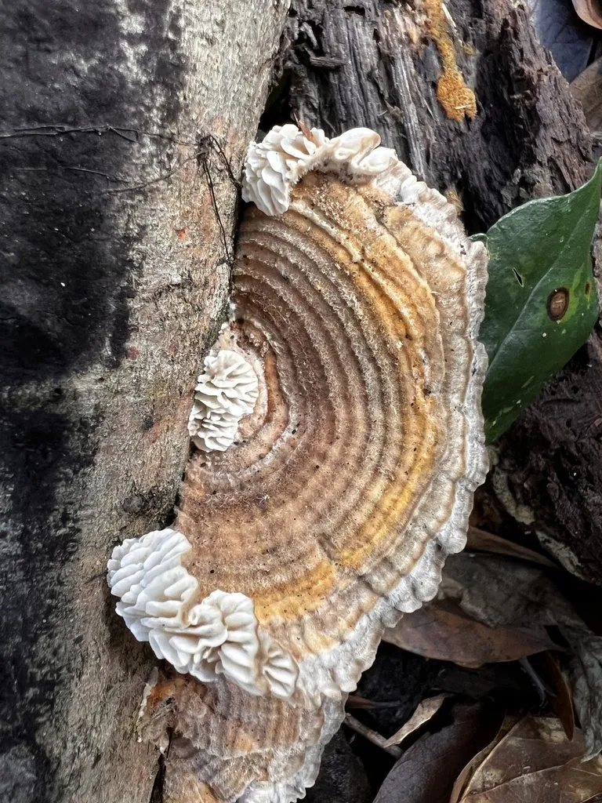

真菌 · 真菌界
桦褶孔菌 Lenzites betulina

多孔菌科褶孔菌属一年生木腐菌，菌盖表面被绒毛、菌褶呈迷宫状，专生于桦木枯木，引起白色腐朽，不可食用。
- 分类
- 门担子菌门纲伞菌纲目多孔菌目科多孔菌科属褶孔菌属
- 栖息环境
- 北半球温带阔叶林，主要生于桦木枯木，引起白色腐朽
- 地理分布
- 北半球温带广布，中国东北、华北、西南林区常见
- 保护级别
- IUCN 暂无评估；分布广，种群稳定
物种志
桦褶孔菌的子实体一年生，革质至木栓质，菌盖半圆形至扇形，宽 3–10 厘米，表面灰白色至灰褐色，密被粗毛并具同心环纹，边缘薄。菌肉白色至淡黄色；子实层体呈褶状，菌褶迷宫状分枝，灰白色至淡褐色。孢子印白色，孢子圆柱形，光滑无色。
本种分布于北半球温带，主要生于桦木属枯木上，也见于栎、杨等阔叶树，引起木材白色腐朽。它最显著的特征是子实层呈迷宫状的菌褶，而不是典型的圆孔，因此得名“褶孔菌”。桦褶孔菌革质坚韧，不可食用；其提取物在研究中显示出一定的抗菌与抗炎活性，但野生菌不可自行入药。在桦木倒木上，它常与木蹄层孔菌、毛栓菌等混生。
形态与习性
- 菌盖半圆形，宽 3–10 厘米，被粗毛
- 子实层菌褶迷宫状分枝，灰白色
- 孢子印白色，孢子圆柱形
- 生境桦木等阔叶树枯木，引起白色腐朽
- 食用性革质坚韧，不可食用
- 药用提取物有抗菌研究价值，不可自行入药
趣味知识
- 桦褶孔菌的子实层不是圆孔，而是迷宫状分枝的菌褶，在木腐菌中很特别。
- 它主要生长在桦木枯木上，是桦树林中常见的分解者。
- 虽然名字里有“褶”，它其实属于多孔菌目，与真正的褶菌不同。
- 它的菌盖表面密被粗毛，摸上去像粗糙的绒布。